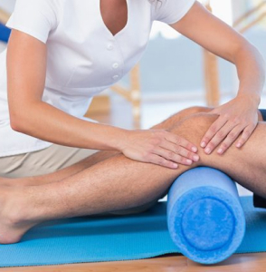

SERVICIOS



- Rehabilitación física
- Rehabilitaión deportiva
- Terapia manual
- Vendaje neuromuscular
- Terapia geriátrica - adulto mayor
- Fisioterapia a domicilio
- Esguince Tobillo
- Esguince rodilla
- Rehabilitación artroscopia de rodilla
- Rehabilitación reemplazo de rodilla
- Rehabilitación reemplazo de cadera
- Espasmos musculares
- Cervicalgia - dolor en cuello
- Lumbalgia - dolor lumbar espalda baja
- Luxación hombro
- Luxación rodilla
- Rehabilitación tras amputación
- Terapia para la parálisis facial
- Postoperatorio de hombro
- Lesión de manguito rotador
- Fisioterapia post covid